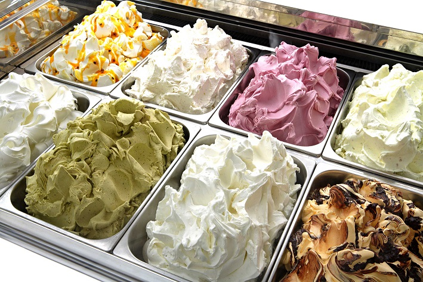
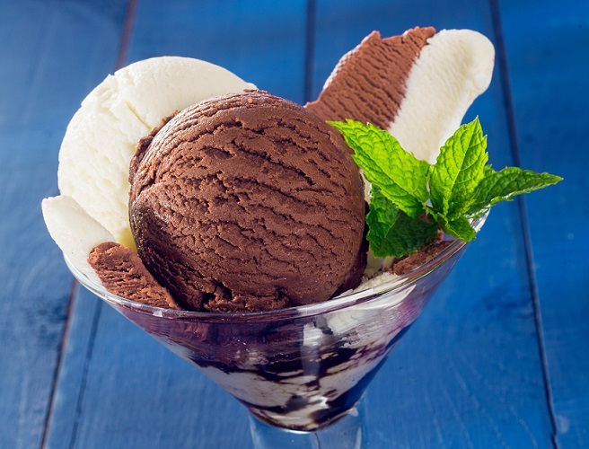
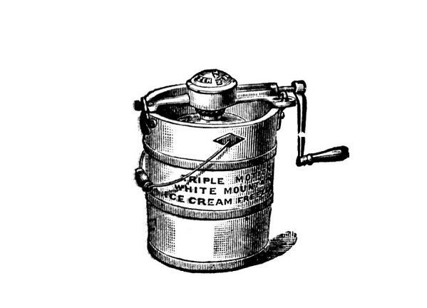
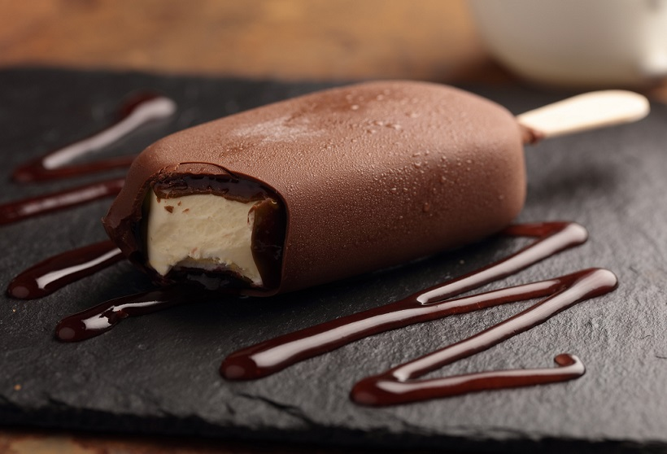

История мороженого
Мороженое — очень древнее лакомство. История изобретения популярнейшего десерта уходит корнями во времена древнейших цивилизаций Азии — Китая и Междуречья. Мороженым восхищались Александр Македонский, Наполеон и Джордж Вашингтон, а запатентовали его сразу несколько человек.
Считается, что история мороженого насчитывает более 5000 лет.
Еще в 3000 году до нашей эры в богатых домах Китая к столу подавались десерты, отдаленно напоминающие мороженое — богатые китайцы лакомились снегом и льдом, смешанным с кусочками апельсинов, лимонов и зернышками гранатов. Китайский император Тангу даже придумал свой собственный рецепт приготовления смесей из льда и молока. Рецепты и способы хранения держались в тайне и были рассекречены лишь в 11 веке до нашей эры в книге «Ши-кинг» — каноническом сборнике древних песен.
Еще один древний источник, описывающий применение охлажденных соков во время уборки урожая, — письма Соломона, царя Израиля. Традицию употребления мороженого переняли и древние арабы. Иакже охлаждённые вина, соки и молочные продукты потребляли ещё древние греки, а вслед за ними и другие цивилизации. Рекомендовал мороженое для укрепления здоровья и знаменитый античный врач Гиппократ.
Мороженым угощали величайшего полководца древности Александра Македонского — во время его походов в Индию и Персию. В его время придумали замораживать в снегу ягоды. За снегом в горы посылали рабов, а чтобы он не таял, устраивали специальные эстафеты. Кстати, именно его солдаты придумали добавлять в воду с фруктами вино, мед и молоко.
Снег и лед для приготовления фруктовых напитков использовался еще в античном Риме. В своей книге «О кулинарном искусстве» известный итальянский кулинар Апиций впервые поделился опытом приготовления прохладительных напитков.
Холодными десертами завершались трапезы при дворе императора Нерона, который приказал, чтобы ему приносили горный лед и смешивали с фруктовыми добавками. В его эпоху (I в.н.э.) охлажденные и подслащенные соки применялись уже очень широко. Примечательно, что снег для их приготовления доставляли с отдаленных альпийских ледников, а для длительного хранения снега строили вместительные ледяные погреба.
С мороженым связано множество интересных историй, связанных с мороженым. Например, в 780 году н. э. халиф Аль Махди сумел доставить в Мекку целый караван верблюдов, груженных горным снегом. Другой же не менее поразительный факт, приведенный в трудах персидского путешественника Нассири-Хозрау, гласит, что в 1040 году н. э. снег для приготовления напитков и мороженого доставляли к столу каирского султана ежедневно из горных районов Сирии.
Очевиден тот факт, что мороженое изобретали там, где, как и в Китае, изнурительно жаркие места соседствуют с районами с минусовой температурой. Такое сочетание присуще южным странам, в которых есть горные массивы. Например, Ирану, где горы занимают более половины территории.
Известно, что там с давних времен научились рационально использовать лед и снег. В пустынных районах, где температура днем может достигать 40°С, надо было как-то охлаждать пищу, иначе она очень быстро портилась. Для этого персы строили так называемые якхчалы — глубокие погреба, потолок, стены и пол которых они покрывали толстым слоем теплоизолирующей смеси. В нее входили яичные белки, песок, глина, козья шерсть, зола, известь. Когда эта субстанция высыхала, она становилась еще и водонепроницаемой. Чтобы минимизировать потери тепла, вход в якхчал располагался на севере, в темном прохладном месте. Такие хранилища заполнялись привезенными с гор обледенелыми глыбами снега. Их использовали и для приготовления подобия мороженого, фалуде — смеси лапши, фруктов, фисташек, розового или лимонного сиропа с мелко наколотым льдом.
Европа

Вновь европейцев же с мороженым, по-видимому, познакомил в начале XIV века известный путешественник Марко Поло. Впервые блюдо было описано в путевых журналах еще в самом начале XIV века. Известный путешественник, побывав в Китае, так полюбил мороженое, что по возвращении на родину — в Италию — не преминул поделиться некоторыми рецептами его приготовления с отечественными кулинарами.
По легенде, Марко Поло привез из своего путешествия по Востоку рецепт лакомства, для охлаждения которого использовали не только снег, но и селитру. И с тех пор блюдо, похожее на шербет, непременно присутствовало в меню аристократов.
Именно тогда мороженое оказалось в центре интриг: повара хранили рецептуру в строжайшем секрете, а для непосвященных его производство было сродни чуду. Поначалу лёд хранился в специальных закрытых местах и подавался к столу только для королевских семей и Римских пап. Постепенно производство льда удешевлялось.
Рецепт мороженого, наиболее приближенного к современному, родился тоже в Италии. А если еще точнее — на Сицилии. На самом большом острове Средиземного моря имелось все необходимое для того, чтобы создать охлаждающий десерт. В первую очередь — не распространенный в других частях Европы сахарный тростник, из которого делали сахар.
Известный с древности подсластитель — мед для изготовления мороженого не очень годится, потому что при замерзании он кристаллизуется (а этого как раз не требуется, достаточно и той проблемы, что в кристаллы превращается жидкость). Кроме того, на Сицилии всегда занимались разведением домашней птицы и рогатого скота, а значит, яйца и молоко — основные ингредиенты для мороженого десерта — были всегда под рукой. Но одно из самых главных условий — здесь есть лед (на горных массивах Иблеи, Неброди, Ле-Мадоние, на Пелоританских горах). Сицилийский лед поставляли по всей Италии и вывозили на Мальту. Наконец, жители этого острова издавна добывали морскую соль. До тех пор пока не изобрели холодильники и электрические мороженицы, без нее было не обойтись.
Чтобы стало понятно, для чего нужна соль в приготовлении сладкого блюда, следует объяснить, чем мороженое отличается от других холодных десертов — от вышеупомянутой персидской фалуде или от замороженного молока, с которого в сибирских деревнях ножом соскребали стружку и ели с медом, вареньем или сахаром.
Разница — в консистенции: мороженое, даже если в нем есть кусочки орехов, фруктов или печенья, представляет собой однородную, гладкую, кремообразную массу. Добиться такой однородности можно, только непрерывно помешивая охлаждающуюся субстанцию, чтобы в ней не образовывались кристаллы. Совместить охлаждение и помешивание без помощи электричества сложно: лед тает медленно, и столь же медленно застывает мороженое. Его придется непрерывно перемешивать много часов подряд. Соль же заставляет лед таять гораздо быстрее, и при этом он забирает тепло из окружающей среды, в частности из смеси, предназначенной для замораживания.
Итак, вот простейшая технология производства мороженого, успешно использовавшаяся на протяжении нескольких столетий: емкость с ингредиентами ставили в миску, наполненную льдом и солью, и взбивали молочную массу. Талую воду периодически сливали, добавляя новый лед и порцию соли. И через пару часов десерт был готов.
Однако все тайное рано или поздно становится явным. Так и случилось, когда юная Екатерина Медичи, выйдя замуж за французского короля Генриха II, привезла из Италии во Францию своего шеф-повара — знаменитого Бенталенти, признанного авторитета в приготовлении мороженого и прохладительных напитков.
Впервые он угостил мороженым 28 октября 1533 года на пиру в честь бракосочетания 14-летней невесты Екатерины Медичи, известной более всего по романy «Королева Марго» Александра Дюма-отца. Мороженое представляло собой ледяные шарики с фруктами. В дальнейшем Медичи часто стала угощать им гостей на торжественных обедах и баловать лакомством своего сына Генриха III.
Новый десерт мгновенно завоевал симпатии французского двора. Советники короля даже потребовали, чтобы итальянец приготовил мороженое в их присутствии, и, ознакомившись с процессом, постановили считать технологию и рецепт государственной тайной, которую следовало должным образом охранять, особенно от простолюдинов.
Довольно быстро мороженое из Версаля перекочевало в поместья французских вельмож — несмотря на жесточайшие запреты на разглашение рецепта, который считался государственной тайной.
С тех пор при французском дворе мороженое поедали в несметных количествах. Даже такой гурман, как Людовик XIV, не отказывался от него. В 1649 году французский кулинар Жерар Тиссайн придумал оригинальный рецепт замороженного ванильного крема – из молока и сливок. Новинку назвали «неаполитанским мороженым». После этого рецептура ледяного десерта обновлялась постоянно.

В 1625 г. внучка Екатерины Медичи — Генриетта Мария вышла замуж за короля Англии Карла I. Вместе с французской принцессой в Англию приехал ее личный повар и кондитер Жерар Тиссайн, владевший многими секретами приготовления мороженого. Примечательно, что Тиссайн осмелился поделиться своими «секретами», только после казни Карла I в 1649 г. Так секретами приготовления мороженого овладела и Англия.
Много новых сортов этого десерта изобрели во Франции во время правления королевы Анны Австрийской. Как-то на одном из банкетов в честь ее сына Людовика XIV каждому приглашенному было подано страусиное яйцо в золоченом бокале, которое на деле оказалось восхитительным на вкус мороженым.
В Америку же рецепты приготовления этого лакомства попали, по-видимому, в XVIII веке вместе с английскими переселенцами. На приемах, которые устраивал в те годы губернатор штата Мэриленд Вильям Блейд, гостей угощали фруктовым мороженым и прохладительными напитками. Холодным десертом увлекались и многие президенты США, например, Джордж Вашингтон, который лично изготавливал мороженое на своем ранчо в предместье Маунт-Вернон.
А приехавший в Новый Свет предприниматель-кулинар Филипп Лензи даже дал объявление в нью-йоркских газетах, что привез из Лондона рецепты различных сладостей, в том числе мороженого, и вскоре среди населения восточного побережья Америки появилось много поклонников нового лакомства.
А общедоступным мороженое стало благодаря предприимчивости опять-таки итальянцев. В 1660 году Франческо Прокопио Ди Кольтелли (1651—1727) открыл первое кафе-мороженое в Париже напротив театра Комеди Франсез. У себя на родине, в Палермо, он был рыбаком. Во Франции решил попытать счастья на «сладком» поприще, тем более что ему в наследство от деда досталась машинка для сбивания мороженого. Насколько можно судить, это было примитивное устройство: две кастрюли, вставленные одна в другую, к крышке верхней была приделана ручка с лопастями для перемешивания.
В 1782 году в этом кафе, переименованном на французский лад в «Прокоп», клиентам предлагали до восьмидесяти сортов мороженого. Заведение процветает и по сей день.
Это кафе под таким «русским» названием существует и сегодня. Сохранилось и давнее меню, в котором можно прочесть, что же готовили в стенах этого заведения в XVIII веке: «замороженные воды» с разными сиропами (видимо, нечто вроде современной итальянской граниты), холодные сорбеты из ягод, фруктовое мороженое. Популярности кафе «Прокоп» добавил и тот факт, что хозяин получил королевские патенты на многие лакомства, которые подавались только там. В результате в кафе побывали многие известные деятели XVIII—XIX веков: Дидро, Руссо, Марат, Робеспьер, доктор Гильотен, Жорж Санд, Бальзак, Дантон.
В числе завсегдатаев кафе «Прокоп» был и Наполеон Бонапарт. Он настолько полюбил ледяные сладости, что даже в ссылку на остров Святой Елены выписал себе аппарат для их изготовления, который ему не замедлила прислать одна сердобольная англичанка.
У Колтелли нашлось немало последователей: вскоре небольшие ресторанчики, специализировавшиеся на мороженом, заполонили весь Париж. Особенно много их было в квартале Пале-Рояль. А уже в 1676 г. 250 парижских кондитеров объединились в корпорацию мороженщиков, в эти годы мороженое стали производить круглый год.
При Наполеоне III ( 1852 — 1870 г.г. ) в Париже впервые вырабатывается мороженое в стаканчиках и пломбир (знаменитый пломбир родом якобы из французского города Плобьер-Ле-Бем), в Италии — великие любители смешивать самые невероятные продукты, придумали мороженое-ассорти с добавками фруктов, орехов, ликера, кусочков печенья и даже цветов, в Австрии — кофе глясе и шоколадное мороженое. В это время появляются замороженные взбитые сливки, перемешенные с мелко нарезанным миндалем и мараскином, слоеное мороженое с клубникой и тертым шоколадом куполообразной формы. Новые сорта мороженого, приготовленные по случаю торжеств, быстро перенимались в массовом производстве.
Так, на одном из приемов китайской миссии в Париже в 1866 г. был предложен новый десерт — снаружи горячий омлет, внутри — имбирное мороженое. Это был так называемый «омлет с сюрпризом», который разработали немецкие кулинары. Остается только предполагать, сколько оригинальных и даже уникальных рецептов мороженого было рождено изобретательностью человеческого гения. К сожалению, о многих из них история хранит молчание.
Россия
В России народ издавна употреблял свои виды мороженого, благо в студеные зимы не было недостатка в «хладагентах» для заморозки лакомств. Еще в Киевской Руси у нас подавали мелко наструганное замороженное молоко. В сибирских деревнях и по сей день хозяйки хранят молоко, заморозив его в блюдечках и… сложив лед стопкой. Во многих деревнях на масленицу изготовлялась смесь из замороженного творога, сметаны, изюма и сахара.
В «европейском» варианте мороженое появилось у нас в середине XVIII века и сразу завоевало большую популярность. Так, граф Литта, посланник Мальтийского ордена в России, впоследствии принявший российское подданство, питался практически одним мороженым. Говорят, даже перед смертью, причастившись, он приказал подать ему десять порций лучшего мороженого: «В раю такого не будет».
Мороженое любили не только в среде простого народа, оно было широко представлено в меню при дворах Петра III и Екатерины II. Сама технология получения мороженого в те времена была довольно таки примитивна и позволяла получать незначительное количество продукта.
В мемуарах XIX века можно встретить восторженные воспоминания о том, какой эффект производил на публику десерт «Везувий на Монблане» (мороженое обливали ромом или коньяком и поджигали) или красочные развалины античного храма, выполненные из мороженого разных цветов. Создавая эти шедевры, кондитеры по многу часов мерзли на морозе, а «жили» лакомства считанные минуты, поскольку моментально начинали плавиться от жара печей и свечей.
Только в XIX веке в России появилась первая машина для приготовления мороженого. промышленное производство мороженого у нас зародилось лишь в начале 30-х годов нынешнего века.
Промышленные масштабы
Мороженое, сделанное вручную, было удовольствием недешевым, а потому малодоступным. Иногда страсть к этому лакомству приводила к настоящим трагедиям. Например, в 1883 году на баптистском празднике в американском городе Кэмден мороженым насмерть отравились 59 человек. Правда, это было не обычное мороженое, а… многоразовое.
Ведь полакомиться сладостью хотелось всем, но не многие могли себе это позволить. Так появились изобретения вроде «Ватного мороженого Смита» — конуса из спрессованной ваты или «Методистского мороженого Брауна» — рожка из резины. Фокус состоял в том, что на рожок брызгали немного подслащенного молока и облизывали его, представляя, что в руках настоящее мороженое. По мнению газеты New York Times, сообщившей о печальном происшествии с отравлением, несчастные баптисты не разобрались и сжевали имитации мороженого подчистую.
Изначально производство мороженого строилось на использовании природного льда и снега, таким образом человечество находилось в постоянной зависимости от капризов природы. Но вездесущий технический прогресс постепенно преобразовал и производство мороженого, превратив его из изысканного лакомства богатых салонов в продукт, доступный всем и каждому. Архивные материалы позволяют восстановить хронологию открытий в области производства мороженого. Сегодня стало известно, что еще в 1525 г. врач из Апилии Цимара писал об охлаждающем действии селитры. Однако производство мороженого в относительно больших объемах стало возможным лишь после внедрения достаточно производительных способов получения и хранения льда, охлаждающих устройств и машин с мешалками и дробилками.
В 1834 г. американец Джон Перкин запатентовал идею использования эфира в компрессорном аппарате. Спустя 10 лет англичанин Томас Мастерс получил патент на машину для мороженого, которая представляла собой оловянный кувшин с вращающимся трех лепестковым шпателем, окруженным льдом, снегом или смесью одного из них с солью, солями аммония, селитрой, нитратами аммония или хлоридом кальция. Согласно патентному описанию машина Мастерса могла охлаждать, а также одновременно морозить и взбивать мороженое.
В 1843 году англичанка Нэнси Джонсон изобрела ручное устройство для изготовления мороженого и запатентовала его. Ручной фризер для приготовления мороженого в 1846 году изобрела Нанси ДжонсонНо денег на организацию производства нового оборудования ей не хватило. Патент пришлось продать американцам. В 1851 году в Балтиморе открылся первый завод и была выпущена первая промышленная партия мороженого. И вот уже более 150 лет процесс совершенствования рецептуры и технологий не прекращается ни на один день.

Ручной фризер для приготовления мороженого в 1846 году изобрела Нанси Джонсон
В 1848 г. в США были запатентованы две машины для приготовления мороженого. Одна из них состояла из приспособления с двумя концентрическими цилиндрами, один из которых заполнялся хладагентом. В 1860 г. Фердинанд Карре создал первую в мире абсорбционную холодильную машину, работавшую на жидком и твердом абсорбенте. Спустя четыре года Карре провел усовершенствование компрессионной машины, в которой впервые применялся новый хладагент — аммиак.
Серийное производство фризеров началось во второй половине XIX века Якобом Фусселлом в Балтиморе. Чуть позже были изобретены холодильные машины, разработаны способы получения и хранения льда, что позволило значительно снизить трудоемкость, а, следовательно, и себестоимость мороженого. А в 1904 году в городе Сент-Луис прошла международная выставка мороженого, на которой демонстрировался первый автомат для выпуска вафельных стаканчиков.
Таким образом, техника и технология промышленного производства мороженого постоянно совершенствовалась. В ряде стран начали создаваться специализированные фирмы по выпуску машин и оборудования для производства мороженого, которое стало обычным атрибутом городских кафе. Но за этим обыденным явлением стоял стремительный научный прогресс в исследовании процессов охлаждения. Он-то и позволил некоторым фирмам освоить производство машин и оборудования для промышленного изготовления мороженого.
В 1919 году учитель из штата Айова Кристиан Нильсон разработал рецепт и технологию производства нового вида мороженого — облитого шоколадом, а 24 января 1922 года ему был выдан патент на знаменитое эскимо — глазированное мороженое на палочке. Нельсон возил свою продукцию по городам и продавал, одновременно показывая фильм про эскимосов. Новинка сначала была названа «пирожок эскимоса» — «эскимо-пай», но это слово очень быстро сократили просто до «эскимо».
Впрочем, первенство в производстве «эскимо» у американцев оспаривают французы.
Первое глазированное мороженое в 1921 году придумал Христиан Нельсен из штата Айова, а его компаньон Стовер дал ему название — «эскимо-пай», то есть пирожок эскимосаВ 1979 г. французская фирма «Жерве» даже отметила 60 — летний юбилей «эскимо». До начала XX века «Жерве» специализировалась на изготовлении сыров, пока один из ее основателей Шарль Жерве не отведал в Америке популярного фруктового мороженого. После возвращения во Францию ему пришла мысль покрыть мороженое шоколадной глазурью и «насадить» его на палочку. По французским источникам название «эскимо» возникло случайно. В одном из парижских кинотеатров, где Жерве продавал свою сладкую продукцию демонстрировался фильм из жизни эскимосов. А поскольку репертуар кинотеатров менялся в те времена довольно-таки редко, то один из остроумных зрителей, посмотревший несколько раз фильм об эскимосах и съевший за это время дюжину порций мороженого в шоколаде назвал его «эскимо».

Первое глазированное мороженое в 1921 году придумал Христиан Нельсен из штата Айова, а его компаньон Стовер дал ему название — «эскимо-пай», то есть пирожок эскимоса
Таким образом, техника и технология промышленного производства мороженого постоянно совершенствовалась. В ряде стран начали создаваться специализированные фирмы по выпуску машин и оборудования для производства мороженого, которое стало обычным атрибутом городских кафе. Но за этим обыденным явлением стоял стремительный научный прогресс в исследовании процессов охлаждения. Он-то и позволил освоить производство машин и оборудования для промышленного изготовления мороженого.
Новые сорта, созданные на заказ по случаю торжеств, быстро становились объектами массового производства, особенно в США. Первая фабрика по производству мороженого была основана в Балтиморе, но очень скоро такие предприятия появились в Нью-Йорке, Вашингтоне и Чикаго.
Современность
Ныне мороженое прочно завоевало вкусы людей по всему миру и продается практически в каждом продуктовом магазине. Повары создали тысячи рецептов мороженого!
И потому борьба за покупателя идет не на жизнь, а на смерть. Лучшие и самые дорогие сорта делают из элитных натуральных продуктов на основе самых современных технологий. О качестве такого мороженого можно судить хотя бы по тому, что без всяких консервантов оно может храниться в холодильнике при температуре –20oС до двух с половиной лет.
В погоне за потребительским спросом лидеры мирового рынка ежегодно обновляют ассортимент, хотя и без того существует уже несколько тысяч наименований ледяного лакомства. Среди хитов последних лет – мороженое с грецкими орехами, мороженое из зеленого чая, мороженое с лесными травами. Не говоря уже о смородинном, ежевичном, ананасовом, специальных сортах на основе живых йогуртов… Всего и не перечислить.
А мягкое мороженое — британские ученые (в группе которых была молодая Маргарет Тетчер) придумали способ, при котором в мороженое добавляется вдвое больше воздуха, и получается «мягкое» мороженое!
В 1990-х годах появилось более густое мороженое высочайшего класса. К этой категории относятся Ben and Jerry’s, Beechdean и Haagen-Dazs. Кстати, Рубен Маттус придумал свое мороженое еще в 1960 году и назвал его Haagen-Dazs, поскольку оно звучит по-датски.
Какое выбрать?
По сути дела, любое мороженое – это охлажденная взбитая эмульсия из смеси молока, возможно – сливок, сахара, иногда – яиц, часто – фруктовых соков, различных фруктов или овощей (в Японии – даже из рыбы и морепродуктов) плюс ароматизаторы и различные добавки типа орехов или кусочков карамели.

В зависимости от способа производства мороженое бывает закаленным, мягким и домашним. Мягкое, температурой 5–7oС, делают в ресторанах и кафе на специальном оборудовании. Есть его нужно сразу, впрок такие десерты не заготавливают. По виду оно напоминает крем.
Закаленное мороженое – промышленное. Оно делится на несколько групп – по типу основного продукта и наполнителя и по расфасовке. Основные представители «молочной» группы – молочное, сливочное и пломбир – отличаются друг от друга своей жирностью.
Другие группы – плодово-ягодное или фруктовое и ароматическое. Есть еще и так называемые любительские, или домашние, виды – на молочной основе, фруктовое, молочно-фруктовое, многослойное, с яичным белком и даже с кондитерским жиром.
Теперь конкретные цифры. Самое жирное мороженое – пломбир, его жирность в среднем 12–15%.
Оно названо в честь французского города Пломбьер, где якобы его изобрели. Якобы – потому что во Франции пломбир делают из английского миндального крема с добавлением взбитых сливок и засахаренных фруктов, настоянных на вишневой водке. У нас, конечно, пломбир попроще, но все равно – самое жирное и калорийное мороженое.
Далее – сливочное, с содержанием жира 8–10%, потом – молочное, в котором жира еще меньше, всего 2,8–3,5%. В плодово-ягодном мороженом и фруктовом льде молочных жиров нет, ведь их делают из свежих и замороженных фруктов и ягод, из пюре, натуральных соков, повидла и джемов.
И, конечно, каждого потребителя интересует качество мороженого. А оно напрямую зависит от его стоимости.
Во-первых, потому, что настоящие, не порошковые, свежие и качественные сливки, различные ягоды, фрукты, шоколад и прочие натуральные ингредиенты всегда стоят дороже, чем полуфабрикаты, концентраты и красители. Во-вторых, оборудование, позволяющее сохранить качество исходного продукта, – тоже дорогое удовольствие, недоступное мелким фирмам.